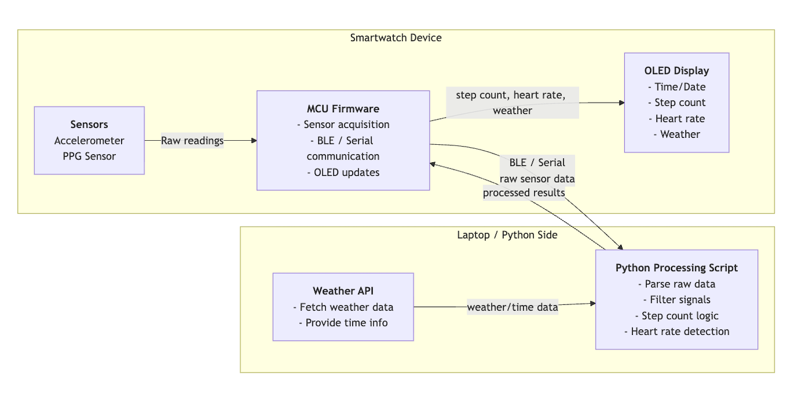

Smartwatch Prototype

Overview
Designed and implemented an IoT smartwatch using an ESP32 microcontroller. The device tracks steps with over 90% accuracy, monitors heart rate in real-time, detects idle activity, and pulls local weather data using a basic Python backend.
Key Features
- Pedometer via 3-axis accelerometer
- Real-time heart rate monitoring with GMM-based peak detection
- Idle activity alert system
- Weather and Time updates based on location via API integration
- Stopwatch and Timer functionality
System Architecture
Raw sensor data was collected by the ESP32 and sent to a Python processing pipeline, where step count and heart rate estimates were computed before being displayed on the device.

Software
Arduino • C++ • Python • Machine Learning (GMM)
Hardware
ESP32 • OLED Screen • 3-axis Accelerometer • Photodetector • Vibration Motor